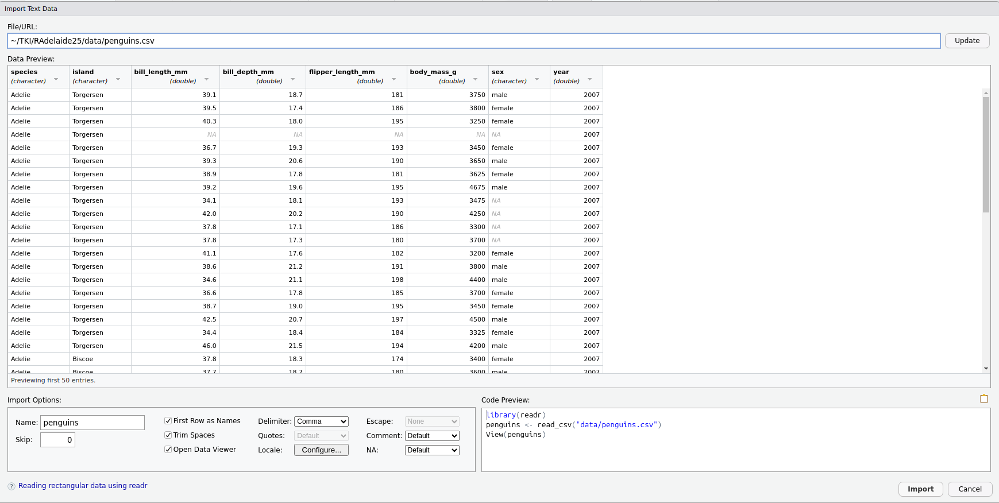
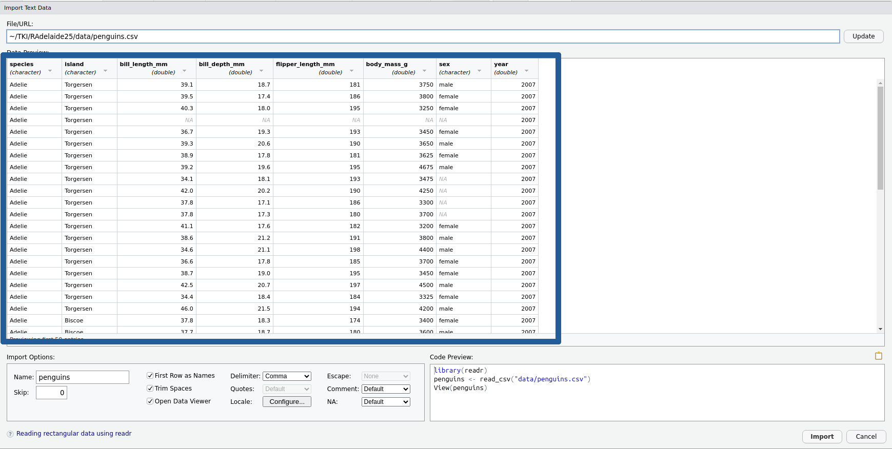

Importing Spreadsheet-Like Data
RAdelaide 2025
Importing Data
Now that we’ve spent some time exploring the penguins dataset, how would we import this into R from a spreadsheet?
Data In R
- Working with data in R is very different to Excel
- Can have complicated structures or be simple (e.g.
x <- 1:5) - Spreadsheet-like data is very common
- Is known as a
data.frame- A common variant is known as a
tibble - These were originally called
tbl_dfobjects referring to SQL tables - Is just a
data.framewith some convenience features
- A common variant is known as a
Common File Types
- Probably worth noting the many European countries use the comma as a decimal point
- Can also separate using a semi-colon
- Windows hiding file extensions as a fundamentally dumb idea
- Excel files (
xls/xlsx) have one or more spreadsheets- Can import one sheet at a time using
library(readxl)
- Can import one sheet at a time using
- Comma-separated Values (
.csv)- Plain text file
- Column-style data with commas delimiting the columns
- Resemble a single spreadsheet but:
- No formatting
- No formulas \(\implies\) only values
- No graphs/figures
Importing Data
When importing data into R:
- Cell formatting will be ignored by R
- Plots will also be ignored
- Blank rows/columns are not fatal, just annoying
- Mixtures of numbers and text in a column
data.framecolumns contain all the same type of value
- Deleted cells are sometimes imported as blank rows/columns
- Comma-separated or tab-separated files are often favoured for
R- i.e. plain text, or just the data
- Can also import data from Stata, SPSS or other statistical languages
Other Common Excel Issues
If we’re not careful:
- Excel thinks everything is a date:
- Septin genes are now officially named SEPTIN2 etc (not SEPT2)
- Fractions are also not dates…
- Excel will remove leading zeroes (e.g. phone numbers, catalog ids)
- No record of any steps we’ve performed by clicking on something
- Very common sources of broken data \(\implies\) may need fixing
- ’000s of publications with dates for gene names in results
Mention my former collaborator who would often have completely different results in the ones I’d send him - To sort by p-value, he’d select the p-value column & sort (just that column) - There was no record of this. Only discovered by sitting down with him
Preparation
File>New File>R Script(OrCtrl+Shift+N)- Save as
ImportPenguins.R
Import Using the GUI
Importing Data
- Preview the file
penguins.csvby clicking on it (View File)- Try in Excel if you prefer, but DO NOT(!!!) save anything from Excel
- This is a common dataset as a simple
.csvfile - This type of data is very easy to manage in
R- Plain text with comma delimiters
- Simple column structure with column names
- No blank rows at the top or separating sub-tables
- No blank columns
- No rownames
Using the GUI To Load Data
Click on penguins.csv, choose Import Dataset then stop! 🛑

(Click Update if you don’t see this)
The Preview Window

- This is another preview of the data before we import it
- We can see all the expected columns
- Notice the types of values are provided under the column names
What just happened?
The code we copied has 3 lines:
library(readr)loads the packagereadr- Packages are collections (i.e. libraries) of related functions
- All
readrfunctions are about importing data
readrcontains the functionread_csv()read_csv()tells R what to do with a csv file
Let’s Demonstrate
Realistically we only need to preview it the first time. Having that preview open every time actually ends up being really annoying
- In the
Environment Tabclick the broom icon 🧹- This will delete everything from your
R Environment - It won’t unload the packages
- This will delete everything from your
- Highlight the code we’ve just pasted and click
Run- Reloading the packages won’t hurt
- Check the
Environment Tabagain andpenguinsis back
You can delete the line View(penguins)
Our First R Script
- This is now our first R script
- An R script is a plain text file
- No objects are stored
- Individual lines can be run using
Ctrl/Cmd + Enter - Can select multiple lines & run
Data Frame Objects
Data Frame Objects
- The object
penguinsis known as adata.frame- Very similar to an SQL table
Requivalent to a spreadsheet- Must have column names
- row names becoming less common (sometimes just the row numbers)
- Missing values (blank cells) are usually filled with
NA
Tibble Objects
readruses a variant called atbl_dfortbl(pronounced tibble)- A
data.framewith convenient features - Similar to a SQL table
- Can only have row numbers for row names
- Is a foundational structure in the
tidyverse
- A
The Tidyverse
- The
tidyverseis a collection of thematically-linked packages- Produced by developers from RStudio/Posit
- Often referred to as tidy-programming or similar
- Calling
library(tidyverse)loads multiple key packagesreadris one of these \(\implies\) usually just load the tidyverse- Will load
dplyr,tidyr,readr,ggplot2+ others
Previewing Objects
- Some additional ways to inspect tibbles are:
head(penguins)
glimpse(penguins)glimpseis loaded withlibrary(tidyverse)
What were the differences between each method?
Functions
Functions in R
head(penguins)
glimpse(penguins)- Here we have called the functions
head()andglimpse()- They were both executed on the object
penguins
- They were both executed on the object
- Call the help page for
head()
?head(if you get multiple options, choose the one from utils)
Function Arguments
head()prints the first part of an object- Useful for very large objects (e.g. if we had 1000 penguins)
- We can change the number of rows shown to us
head(penguins, 4)# A tibble: 4 × 8
species island bill_length_mm bill_depth_mm flipper_length_mm body_mass_g
<chr> <chr> <dbl> <dbl> <dbl> <dbl>
1 Adelie Torgersen 39.1 18.7 181 3750
2 Adelie Torgersen 39.5 17.4 186 3800
3 Adelie Torgersen 40.3 18 195 3250
4 Adelie Torgersen NA NA NA NA
# ℹ 2 more variables: sex <chr>, year <dbl>Understanding read_csv()
- Earlier we called the
Rfunctionread_csv() - Check the help page
?read_csv- We have four functions shown but stick to
read_csv()
Closing Comments
read_csv() Vs read.csv()
RStudionow usesread_csv()fromreadrby default- You will often see
read.csv()(fromutils) in older scripts - The newer (
readr) version is:- slightly faster
- more user-friendly
- handles large files more efficiently via indexing
- gives informative messages
- Earlier functions in
utilsareread.*()(csv, delim etc.) readrhas the functionsread_*()(csv, tsv, delim etc.)- I always use the newer ones
Reading Help Pages: Bonus Slide
- The bottom three functions are simplified wrappers to
read_delim() read_csv()callsread_delim()usingdelim = ","read_csv2()callsread_delim()usingdelim = ";"read_tsv()callsread_delim()usingdelim = "\t"
What function would we call for space-delimited files?
Loading Excel Files
- The package
readxlis for loading.xlsandxlsxfiles. - Not part of the core tidyverse but very compatible
library(readxl)- The main function is
read_excel()
?read_excel